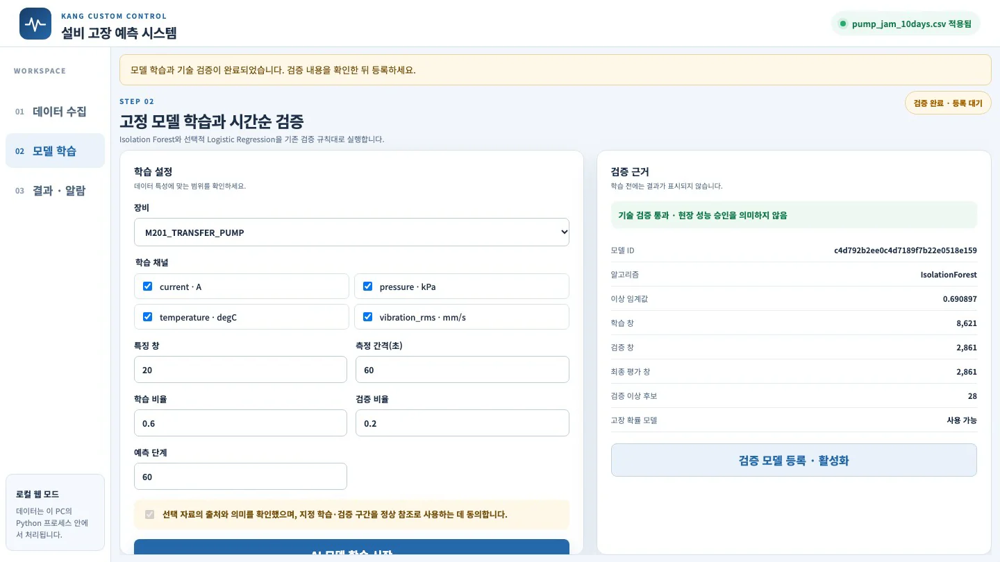
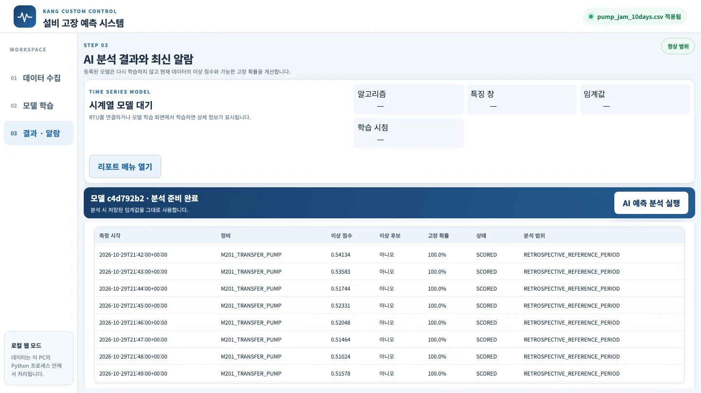

지금까지는 정상 데이터만 학습했습니다. 이 장에서는 고장 분류를 먼저 정하고, 그 분류대로 표시한 고장 기록(
failure_label)을 데이터에 넣습니다. 같은 예측 시스템이 Isolation Forest와 함께 「앞으로 N시점 안에 고장 날 확률」 모델(Logistic Regression)을 학습합니다. 10일 동안 펌프 걸림이 7번 발생한 파일로 학습했습니다. 고장 확률은 매번 걸리기 43~76분 전부터 50%를 넘었습니다. 같은 구간에서 정상만 학습한 모델의 이상 점수는 한 번도 알람을 내지 않았습니다.
무엇을 · 왜#
KANG 개발 측의 안내를 다시 옮깁니다. 「고장 내역·종류·기록으로 분석하려면 실제 고장 정보로 진행하거나 고장 종류를 분류해서 진행해야 하고, 이 분류는 현장의 데이터 수집으로 정의해야 한다. 고장 분류를 정의하고 데이터를 넣으면 같은 방법으로 진행할 수 있다.」
예측 시스템에는 고장 기록을 학습하는 기능이 이미 마련되어 있습니다. 업로드하는 CSV·XLSX의 마지막 열에 failure_label(0 또는 1)이 있으면, 학습할 때 두 모델을 만듭니다.
| 모델 | 배우는 것 | 내는 값 | 고장 기록 |
|---|---|---|---|
| Isolation Forest | 학습 구간의 패턴과 다른 정도 | 이상 점수, 이상 후보(예/아니오) | 필요 없음 |
| Logistic Regression | 지금의 20시점 창 특징 → 앞으로 「예측 단계」 시점 안에 라벨 1이 있는가 | 고장 확률(%) | 필요함 |
두 가지를 기억해 두세요.
- 라벨은 0과 1 하나뿐입니다. 그래서 모델 하나가 고장 분류 하나를 맡습니다. 「펌프 걸림」 모델과 「베어링 손상」 모델을 따로 만들고, 어떤 기록을 1로 표시할지 분류마다 정해야 합니다.
- v0.5.1에서 이 확률 모델은 파일 업로드 경로에서만 만들어집니다. 실시간 RTU 연결은 RTU 자료에
failure_label이 없으므로 Isolation Forest만 학습합니다. 현장 정비 기록이 데이터와 함께 들어오도록 연결하는 것이 다음 단계입니다(6장).
먼저: 고장 분류 정의서#
모델을 만들기 전에 현장 담당자와 함께 이 표를 채웁니다. 아래는 페인트 교반 설비의 견본입니다(1장의 고장 유형에서 뽑았습니다). 실제 분류는 회사의 설비 목록과 정비 기록으로 정합니다.
| 분류 | 대상 설비 | 「1」로 칠 구간 | 기록은 어디서 | KANG 네 채널로 보이나 |
|---|---|---|---|---|
| 펌프 이물 걸림 | 이송 펌프(용적식) | 트립·정지부터 재가동까지 | PLC 트립·인터록 이력, 정비 일지 | 예: 압력·전류 |
| 비드밀 스크린 막힘 | 비드밀 | 챔버 압력 경보부터 청소 완료까지 | 압력 경보, 청소 기록 | 예: 압력(챔버 압력 태그가 있다면) |
| 분산기 과부하 | 고속 분산기 | 인버터 과부하 트립 | 인버터 알람 이력 | 예: 전류·온도 |
| 베어링 손상 | 교반기·감속기 | 교체 정비 전 고장 판정 시점 | 정비 일지, 교체 부품 기록 | 늦게: 진동 RMS·온도(수 kHz 진동이 필요) |
| 임펠러 부착 불균형 | 레트다운·저장 교반기 | 청소가 필요하다고 판정한 시점 | 청소 기록 | 늦게: 진동 RMS |
라벨을 표시할 때 주의할 점입니다.
- 시각이 정확해야 합니다. 정비 일지의 「오후쯤」으로는 1분 간격 데이터의 라벨을 표시할 수 없습니다. PLC 트립 시각처럼 기계가 남긴 시각을 우선합니다.
- 고장이 아닌 사건도 적어 둡니다. 원료 투입, 레시피 변경, 세척, 계획 정지는 라벨 0이지만 따로 표시해 두면 헛알람을 거를 수 있습니다.
- 같은 시각의 네 채널 행은 같은 라벨이어야 합니다. 다르면 예측 시스템이 거부합니다.
이번 실습 파일#
현장 기록이 아직 없으므로, 2장의 가상 RTU와 같은 정상 신호에 10일치 사건을 추가한 파일을 만듭니다.
- 펌프 이물 걸림 7번: 걸리기 전 4시간 동안 토출 압력이 600 → 545 kPa로, 전류가 8.4 → 7.7 A로 서서히 떨어지고 진동이 0.5 mm/s 오릅니다. 걸린 10분 동안은 압력 470 kPa, 전류 12.5 A입니다. 이 10분만
failure_label=1입니다. - 원료 투입 충격(고장 아님): 5시간마다 4분 동안 진동 +2.0 mm/s, 전류 +0.8 A가 들어갑니다.
시간순으로 정렬한 뒤 6:2:2로 나누면 학습 구간(10-20~10-25)에 걸림 4번, 검증 구간(10-26~10-27)에 1번, 최종 평가 구간(10-28~10-29)에 2번이 들어갑니다. 마지막 걸림(10-29 21:50)은 파일 끝 두 시간 전에 넣어, 결과 화면의 최근 행에서 걸리기 직전을 볼 수 있게 했습니다.
# kang/scenarios.py 의 일부 — 정상 신호(baseline)는 가상 RTU device.py 와 같은 식
def labeled_pump(days=10, seed=42):
n = days * 1440
v = baseline(n, seed); labels = [0] * n
jams = [int(d * 1440) for d in (1.2, 2.5, 3.6, 4.9, 7.1, 8.6)] + [n - 130]
for i in range(300, n - 10, 300): # 원료 투입 충격(걸림 근처는 비움)
if not any(j - 260 <= i <= j + 20 for j in jams):
for k in range(i, i + 4):
v[k]["vibration_rms"] += 2.0; v[k]["current"] += 0.8
for j in jams:
for i in range(j - 240, j): # 4시간 동안 서서히 막힘
u = (i - (j - 240)) / 240
v[i]["pressure"] -= 55 * u; v[i]["current"] -= 0.7 * u; v[i]["vibration_rms"] += 0.5 * u
for i in range(j, j + 10): # 걸림 10분 = 라벨 1
v[i]["pressure"] -= 130; v[i]["current"] += 4.1; v[i]["vibration_rms"] += 1.0; labels[i] = 1
return v, labels, jams
python3 make_labeled.py pump_jam_10days.csv
# pump_jam_10days.csv: 14400시점 × 4채널, 걸림 7번 — 10-21 04:48, 10-22 12:00, 10-23 14:24, 10-24 21:36, 10-27 02:24, 10-28 14:24, 10-29 21:50
파일은 2장의 CSV 형식에 열 하나를 더한 것입니다(57,600행, 8.5 MB).
schema_version,record_id,asset_id,channel_id,event_time,ingested_at,value_raw,unit_raw,quality_raw,source_ref,data_origin,failure_label
1.0,m201-00000-current,M201_TRANSFER_PUMP,current,2026-10-20T00:00:00+00:00,2026-10-20T00:00:00+00:00,8.4248,A,GOOD,SCENARIO_LABELED,SYNTHETIC,0
data_origin은 SYNTHETIC·PUBLIC·USER 가운데 하나여야 합니다. 현장 자료는 USER로 씁니다.
따라 하기#
-
예측 시스템의 「01 데이터 수집」 오른쪽 CSV 또는 XLSX 선택에서
pump_jam_10days.csv를 고르고 파일 검사 및 적용을 누릅니다. 1초 안에 검사가 끝나고 오른쪽 위가 「pump_jam_10days.csv 적용됨」으로 바뀝니다. 전체 행 57,600, 장비 1(M201_TRANSFER_PUMP), 채널 4, 측정 간격 60s가 나오고, 최신 데이터 미리보기 표 맨 오른쪽에failure_label열이 보입니다. 파일을 올리면 RTU 연결은 해제됩니다. -
02 모델 학습으로 갑니다. 장비와 네 채널이 이미 선택되어 있습니다. 특징 창 20, 측정 간격 60초, 학습 비율 0.6, 검증 비율 0.2는 그대로 두고 예측 단계만 60으로 바꿉니다. 「지금부터 60분 안에 걸리는가」를 배우라는 뜻입니다.
-
AI 모델 학습 시작을 누릅니다. 이번 실행에서는 2초쯤 걸렸습니다. 오른쪽 검증 근거에 「기술 검증 통과 · 현장 성능 승인을 의미하지 않음」과 함께 다음 값이 나옵니다.
항목 값 이상 임계값 0.690897 학습 창 / 검증 창 / 최종 평가 창 8,621 / 2,861 / 2,861 검증 이상 후보 28 고장 확률 모델 사용 가능 
학습 설정(예측 단계 60)과 검증 근거. 고장 확률 모델이 「사용 가능」 -
검증 모델 등록 · 활성화를 누르면 「03 결과 · 알람」으로 넘어갑니다. AI 예측 분석 실행을 누릅니다. 점수화 행 14,381(앞 19시점은 창이 차지 않아 제외), 이상 후보 202, 최신 이상 점수 0.3853, 최신 고장 확률 0.0%가 나옵니다. 마지막 걸림이 끝난 뒤이므로 현재 고장 확률은 낮습니다.
-
아래 「최근 분석 행」 표를 마지막 걸림(10-29 21:50) 직전으로 내립니다.
측정 시각 이상 점수 이상 후보 고장 확률 21:00 0.46700 아니오 93.9% 21:05 0.47518 아니오 99.4% 21:20 0.47941 아니오 100.0% 21:45 0.52331 아니오 100.0% 
걸리기 직전 행. 이상 점수는 임계값(0.69) 아래라 「이상 후보 아니오」인데 고장 확률은 100% 같은 시각, 같은 데이터인데 두 모델의 답이 다릅니다. 정상만 배운 Isolation Forest는 압력이 서서히 떨어지는 것을 「정상 범위 안의 변화」로 봅니다. 고장 기록으로 배운 Logistic Regression은 「이 모양 다음에는 걸림이 왔다」를 배웠습니다.
일곱 번의 걸림을 모두 보면#
결과 CSV(결과 CSV 다운로드)로 각 걸림의 결과를 확인했습니다.
| 걸림 | 구간 | 고장 확률이 50% 이상으로 계속된 시작 | 그 4시간 동안 이상 후보(Isolation Forest) |
|---|---|---|---|
| 10-21 04:48 | 학습 | 65분 전 | 없음 |
| 10-22 12:00 | 학습 | 61분 전 | 없음 |
| 10-23 14:24 | 학습 | 68분 전 | 없음 |
| 10-24 21:36 | 학습 | 69분 전 | 없음 |
| 10-27 02:24 | 검증 | 76분 전 | 없음 |
| 10-28 14:24 | 최종 평가 | 43분 전 | 없음 |
| 10-29 21:50 | 최종 평가 | 64분 전 | 없음 |
- Isolation Forest는 걸린 70분(7번 × 10분) 가운데 69분을 이상 후보로 잡았습니다. 하지만 걸리기 전에는 한 번도 잡지 못했습니다. 이상 후보 202행 가운데 133행(7개 사건)은 걸림과 상관없는 원료 투입 충격에 해당했습니다.
- Logistic Regression은 매번 예측 단계(60분)와 비슷한 때부터 확률을 올렸습니다. 걸림과 상관없는 시각에 50%를 넘은 것은 마지막 걸림 직후 한 번(6행)뿐이었습니다. 원료 투입 충격에는 반응하지 않았습니다.
- 검증 근거의 분류 지표는 검증 구간 정밀도 0.81·재현율 1.00·AUC 1.00, 최종 평가 구간 정밀도 0.80·재현율 0.88·AUC 0.997이었습니다(화면에는 나오지 않고, 학습 요청
/api/train응답의validation.prediction_validation·prediction_test에 있습니다).
이 숫자를 현장 성능으로 읽지 마세요
걸림 전조를 일부러 같은 모양(4시간 선형 저하)으로 넣었으므로 잘 맞는 것이 당연합니다. 현장의 걸림은 전조가 없거나(단단한 이물이 갑자기 들어옴), 매번 모양이 다릅니다. 걸림이 10일에 7번이라는 것도 매우 많은 편입니다. 이 실습이 보여 주는 것은 고장 분류와 기록이 있으면 같은 프로그램이 다른 질문(「언제 걸리나」)에 답하기 시작한다는 점입니다. 몇 분 앞서 맞히는지가 아닙니다. 확률도 보정된 값이 아니며, 시스템 스스로 「고장 확률 보정·현장 검증이 아님」을 밝힙니다.
확인 문제#
-
「펌프 걸림」과 「베어링 손상」을 한 파일의
failure_label하나로 함께 표시하면 어떤 문제가 생길까요?정답
라벨이 0/1 하나뿐이라 모델은 두 고장을 한 가지로 배웁니다. 걸림 전조(압력 저하, 몇 시간)와 베어링 전조(진동·온도, 며칠)는 모양도 예측 단계도 다르므로 두 고장의 특징을 모두 불명확하게 학습합니다. 분류마다 라벨을 따로 표시하고 모델을 따로 만듭니다.
-
예측 단계를 60에서 10으로 줄이면 고장 확률이 오르기 시작하는 때는 어떻게 바뀔까요?
정답
모델은 「10분 안에 걸리는가」를 배우므로, 확률이 걸리기 10분 전쯤에야 오릅니다. 예측 단계는 「얼마나 앞서 알고 싶은가」, 즉 정비 대응에 필요한 시간으로 정합니다. 너무 길게 잡으면 1인 구간이 넓어져 헛알람이 늘 수 있습니다. 직접 바꿔 실행해 보세요.
-
실시간 RTU 연결에서 이 고장 확률을 보려면 무엇이 더 있어야 할까요?
정답
실시간으로 들어오는 데이터에도 고장 기록이 붙어야 합니다. 예를 들어 PLC 트립·인터록 이력이나 정비 시스템의 고장 등록을 시각을 맞춰 RTU 데이터와 합쳐
failure_label을 만듭니다. 그다음 라벨이 있는 누적 데이터로 모델을 학습해 등록합니다. v0.5.1의 RTU 경로는 아직 이 작업을 수행하지 않습니다.